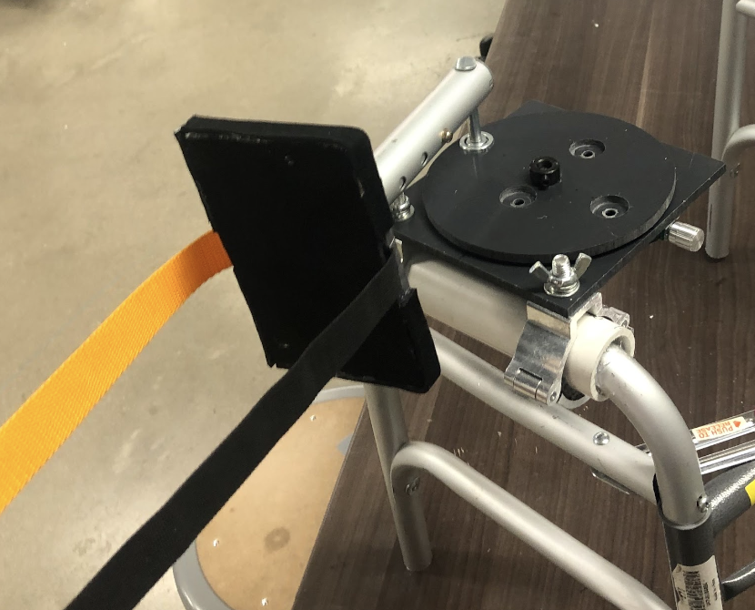

Crank-Dat
Class project at Northwestern
Client Interactions and Discourse
In my freshman engineering course, Design Thinking and Communication, I was paired with a real-world client who had an engineering design challenge. I was matched with a physical therapist from the Shirley-Ryan Ability Lab, a research rehabilitation hospital in downtown Chicago. She worked with stroke patients and was looking for a way to help pull patients onto their strong leg during the course of gait therapy on a treadmill. This was intimidating for me, as it was the first time I was responsible for a project that had real-life implications with a client.
I learned how to translate technical engineering knowledge into concepts that is easy for everyone to understand. More importantly, I was curious and learned how to ask questions. My queries gave me a better understanding at the day-to-day experiences of my client and made me a better engineer.

Designing for Real-World Applications
The product we designed was dubbed the “Crank-dat” and is used in conjunction with a treadmill to help patients with a weak leg shift their weight while gait training. The prototype was rough-cut and ultimately failed at providing enough support to the patient while walking. Even though this project did not turn out to be the polished product we wanted to create, the process we went through set the foundation for my engineering design process.
Growing from Working in a Team
This project was also my first full-scale team project. It provided new challenges for me in communication and teamwork. I worked on a different timetable than my teammates and had to realize that was okay. I got to know my team for the people they were, not just the work they did, contributing to my outlook on empathetic leadership.